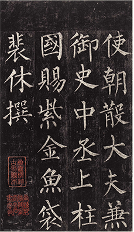

Standard Script
The balanced and clearly legible characters in this commonly used handwritten Chinese script combine distinct, individual strokes in visually sophisticated and complicated forms. It is still the first script taught to schoolchildren, and serves as the typeface for most modern printed materials.

History
The Standard Script(sometimes known as regular script), often called Standard Script, is one of the last major calligraphic styles to develop, emerging between the Chinese Han dynasty and Three Kingdoms period, gaining dominance in the Southern and Northern Dynasties, and maturing in the Tang Dynasty. It emerged from a neatly written, early period semi-cursive form of clerical script. As the name suggests, the Regular Script is "regular", with each of the strokes placed slowly and carefully, the brush lifted from the paper and all the strokes distinct from each other. The Regular Script is usually studied first to give students a feel for correct placement and balance, as well as to provide a proper base for the other, more flowing styles.
Feature
- Each stroke is clear and separate.
- Moderate writing speed. The speed of writing each stroke is average, slower than the running script and cursive script
- Each character looks more square than other scripts
- The number of basic strokes in Kai Shu, perhaps, is more than those of other styles.